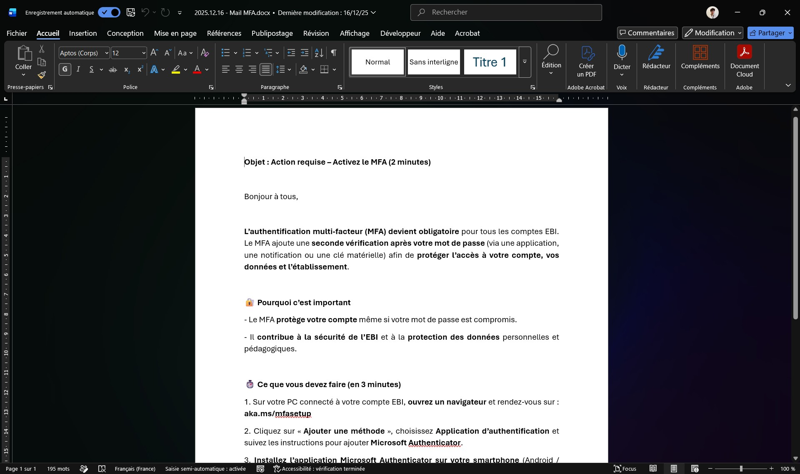
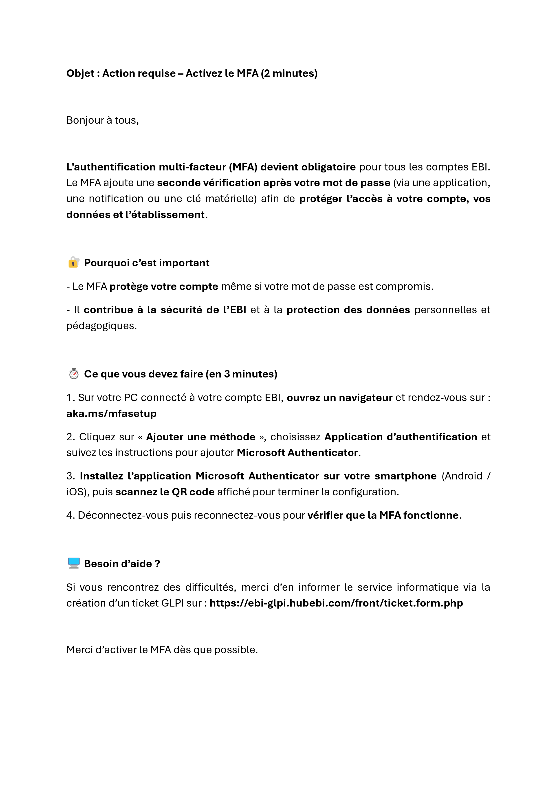
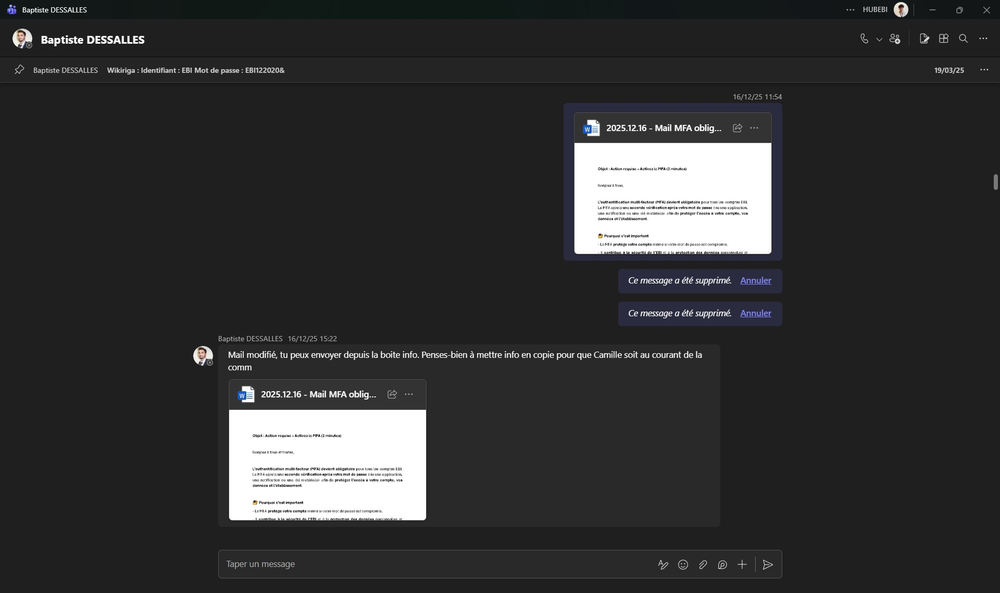
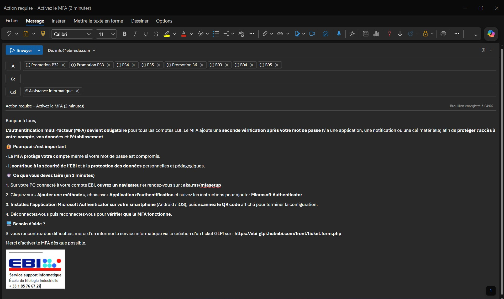
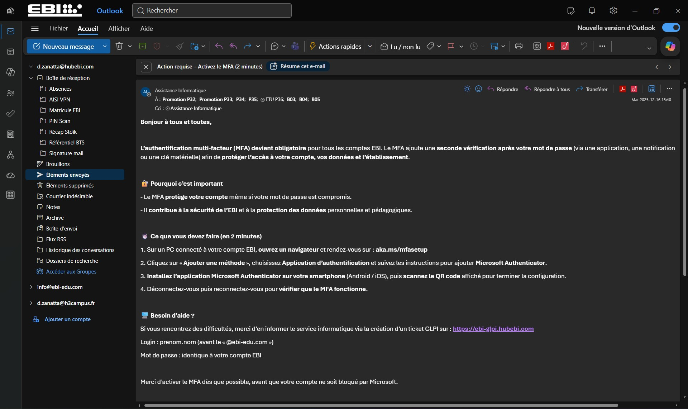

Sensibilisation à l’activation de l'authentification multifacteur (MFA)
Présentation
Dans le cadre de mon alternance au sein du service informatique de l’EBI, j’ai participé à une action de communication interne liée à la sécurisation des comptes utilisateurs.
Mon responsable m’a demandé de préparer puis de diffuser un message à destination des étudiants de l’établissement afin de les informer de l’obligation d’activer l’authentification multifacteur, également appelée MFA.
Cette réalisation s’inscrit dans une démarche de sensibilisation à la cybersécurité, avec pour objectif de renforcer la protection des comptes, des données personnelles et des ressources numériques de l’établissement.
Objectifs
Rédiger un message clair et compréhensible à destination des étudiants.
Expliquer l’intérêt de l’authentification multifacteur dans la protection des comptes.
Fournir une procédure courte permettant d’activer le MFA.
Faire valider le contenu par le responsable informatique avant diffusion.
Envoyer la communication depuis la boîte mail du service informatique.
Diffuser le message aux promotions concernées en respectant les bonnes pratiques de communication.
Environnement de travail
Structure d'accueil : EBI (École de Biologie Industrielle)
Service concerné : service informatique
Public cible : étudiants de l’établissement
Outils utilisés : Microsoft Word, Microsoft Teams, Outlook
Compte d’envoi : boîte mail du service informatique
Objet de la communication : activation de l’authentification multifacteur
Rédaction du message
J’ai commencé par rédiger le contenu du message dans Microsoft Word afin de préparer une communication structurée avant sa diffusion par mail.
Le message devait être suffisamment clair pour un public non technique. Il présentait le principe du MFA, son intérêt pour la sécurité des comptes et les actions à réaliser pour l’activer.
J’ai également intégré un canal de support afin que les étudiants puissent contacter le service informatique en cas de difficulté lors de l’activation.


Validation avant diffusion
Avant l’envoi aux étudiants, j’ai transmis le message à mon responsable afin d’obtenir sa validation.
Cette étape a permis de contrôler le fond et la forme du message avant une diffusion à grande échelle. Elle garantit également que la communication respecte les consignes du service informatique et le cadre institutionnel de l’établissement.
Après retour de mon responsable, le message a été ajusté puis validé pour être envoyé depuis la boîte du service informatique.

Préparation et envoi du mail
Une fois le contenu validé, j’ai préparé le message dans Outlook en utilisant la boîte mail du service informatique comme expéditeur.
Les groupes de promotions concernés ont été ajoutés en destinataires afin de diffuser l’information aux étudiants. La boîte du service informatique a été placée en copie cachée pour conserver une trace de l’envoi et assurer le suivi de la communication.
Avant l’envoi, j’ai vérifié l’objet, les destinataires, le contenu du message et la présence de la signature du service informatique.

Vérification de l’envoi
Après l’envoi, j’ai vérifié la présence du message dans les éléments envoyés d’Outlook.
Cette vérification permet de confirmer que la communication a bien été diffusée aux promotions concernées et qu’une trace de l’envoi est conservée dans la messagerie du service informatique.
Le message envoyé rappelle l’obligation d’activer le MFA, fournit les étapes à suivre et indique le canal de support à utiliser en cas de difficulté.

Résultats obtenus
Message de sensibilisation rédigé dans un format clair et exploitable.
Contenu relu et validé par le responsable informatique avant diffusion.
Communication envoyée depuis la boîte officielle du service informatique.
Promotions étudiantes concernées informées de l’obligation d’activer le MFA.
Procédure d’activation communiquée aux utilisateurs.
Canal de support rappelé pour accompagner les étudiants en cas de difficulté.
Trace de l’envoi conservée dans les éléments envoyés d’Outlook.
Compétences mobilisées
Répondre aux incidents et aux demandes d’assistance et d’évolution
Contribution à une demande liée au renforcement de la sécurité des comptes utilisateurs par l’activation du MFA.
Mettre à disposition des utilisateurs un service informatique
Diffusion d’une procédure permettant aux étudiants d’activer un service de sécurité sur leur compte EBI.
Développer la présence en ligne de l’organisation
Utilisation des outils numériques internes pour diffuser une communication institutionnelle auprès des étudiants.
Travailler en mode projet
Rédaction, validation hiérarchique, préparation de l’envoi, diffusion et vérification de la communication.
Organiser son développement professionnel
Développement de compétences en communication informatique, sensibilisation cybersécurité et rédaction à destination d’utilisateurs non techniques.
Bilan personnel
Cette réalisation m’a permis de participer à une action concrète de sensibilisation à la sécurité informatique auprès d’un grand nombre d’utilisateurs.
J’ai compris l’importance de rédiger un message clair, synthétique et adapté à un public non technique, en particulier lorsqu’il s’agit d’une consigne de sécurité qui doit être comprise et appliquée rapidement.
Cette mission m’a également permis de prendre conscience de la rigueur nécessaire lors d’un envoi à grande échelle : validation préalable, choix du bon expéditeur, vérification des destinataires, utilisation de la copie cachée et conservation d’une trace de l’envoi.